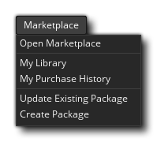

En plus de créer vos propres actifs et le code pour vos projets, vous avez également accès à la GameMaker Studio 2 du marché où vous pouvez télécharger à la fois actifs gratuits et payants à ajouter à vos projets. Vous pouvez en savoir plus sur Marketplace dans la section sur GameMaker Marketplace et les options de ce menu sont les suivantes:
- Aller à la place de marché - Ouvrez la fenêtre de la place de marché où vous pouvez rechercher des éléments.
- Ma bibliothèque - Affichez votre bibliothèque de contenu Marketplace actuelle.
- Mon historique des achats - Cette option ouvre un navigateur et vous amène à la page du compte de l'utilisateur connecté afin que vous puissiez voir l'historique des achats de ce compte.
- Mettre à jour le progiciel existant - Cette option ouvre l' assistant de mise à jour du progiciel afin que vous puissiez mettre à jour un progiciel Marketplace existant que vous avez précédemment créé.
- Créer un paquet - Avec cette option, vous pouvez ouvrir l' assistant Créer un paquet pour créer un nouveau paquet d'actifs ou un tutoriel pour le marché.